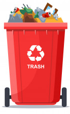
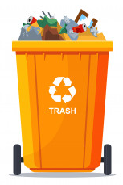
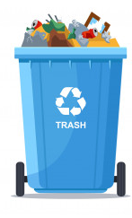

Recycling not only conserves raw materials, but it also protects the environment, saves energy, and reduces waste levels at landfill sites.
Green Container: ordinary waste susch as: styrofoam, paper, plastic, napkins, etc.
Red Container: hazardous waste, mmetal, tools, tocix waste.
Orange Container: metal waste, such as conned beverages and canned packaging.
Blue Container: usable as: glass, plastic and returnable bottles